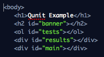
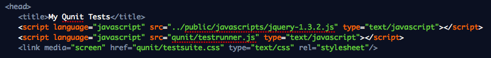
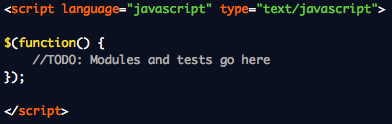
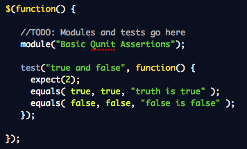
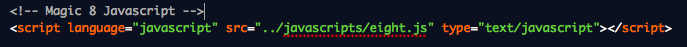
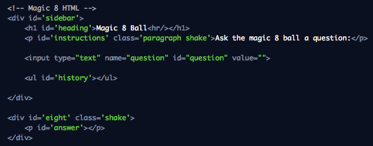
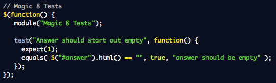
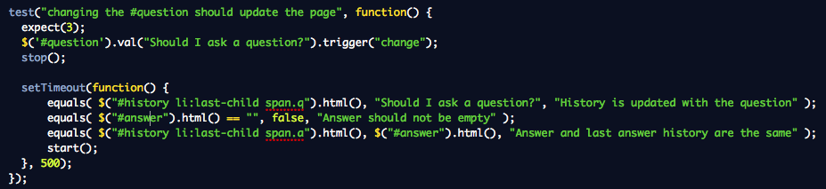

Below are examples for a few of the most popular test frameworks available.
QUNIT
Pros:
- Asynchronous Support
- Good for DOM Testing
- Tests run sequentially in the order they are added to a suite
Cons:
- Difficult to Automate
- Non-BDD Assertion Language
- Somewhat tied to jQuery
Getting Qunit Setup
I had issues trying to start with this non-working example, there's no qUnitTesting or config variable... Used example on jQuery website instead (just uses document ready function). Eventually removed local testrunner.js and testsuite.css in favor of linking to the online version.
-
Download the test runner and css from http://docs.jquery.com/Qunit#Using_QUnit
-
Create an HTML Test Page with the "display" html in the <body>:

-
Include jquery and the test runner / css in the <head>:

-
Add an empty test to the page:

-
Open the test html file in a browser
-
You should see 0 tests of 0 failed
Basic Qunit Assertions
-
Add these simple assertions to the body of your HTML Test Page.

-
Open the test html file in a browser
-
Click here for more detailed documentation on the Qunit Testing API.
Testing Magic8 with Qunit
-
First let's add our application's javascript to the HTML Test Page:

-
Then we'll copy some application html into the bottom of the <body> of the page:

-
Finally we'll add our first test:

Asynchronous Testing with Qunit

-
Trigger some event
-
stop();
-
Make assertions inside a setTimeout(); function
-
start(); at the end of the setTimeout(); function
The jQunit Alternative
JQUnit is a modified version of QUnit that adds setup, teardown, and assert functions, and encapsulates everything in one global variable so it doesn't pollute the namespace. More Info